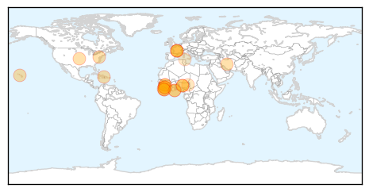

Ebola
30-Day Web Trend
13 alerts, 12 warnings
30-Day Twitter Trend
1 alerts, 1 warnings
Article Locations
Article Confidences
Top Articles:
- 1.000
- ‘There is no such thing as Ebola’
- 1.000
- Rep. Phil Gingrey says migrants may be bringing Ebola virus through the U.S.-Mexico border
- 1.000
- The most from the coast
- 0.999
- How The Fear Of Ebola Is Crippling Business In West Africa
- 0.999
- The Ebola Threat in Sierra Leone: Initial Lessons to Be Learnt
- 0.999
- WHO reports 18 new Ebola cases in West Africa
- 0.996
- Fighting Ebola “by the grace of God”
- 0.980
- Pandora Jewelry moves regional HQ to Baltimore
- 0.980
- Md. man sentenced in gun theft
- 0.980
- Creativity, tech leading push for organ donors
- 0.980
- City police make shooting arrest
- 0.980
- CDC Falls Under Fire After Recent Security Breaches
- 0.980
- Baltimore Police Charge Man With Murder For Filmed Shooting Death
- 0.967
- No School, No Handshakes: Reporting On Ebola From Sierra Leone
- 0.959
- WHO Opens Regional Ebola Response Centre
- 0.955
- Ebola Wreaks Economic Woe In West Africa
- 0.944
- An 'Overhappy' Survivor, A Guarded Forecast
- 0.885
- New Ebola cases, deaths climb in West Africa
- 0.835
- Guinea: Life after Ebola has new meaning for 2 survivors now helping others
- 0.822
- Issa Catco Leads Muslims in Fight against Ebola
- 0.736
- West and Central Africa Region Weekly Regional Humanitarian Snapshot (08 - 16 July 2014) - Nigeria
- 0.652
- Awareness Times News Briefs from Sierra Leone
Top Tweets:
-
No tweets found for Jul 18, 2014
Bubonic Plague
30-Day Web Trend
30 alerts, 0 warnings
30-Day Twitter Trend
0 alerts, 0 warnings

Article Locations
Article Confidences

Top Articles:
Top Tweets:
-
No tweets found for Jul 18, 2014